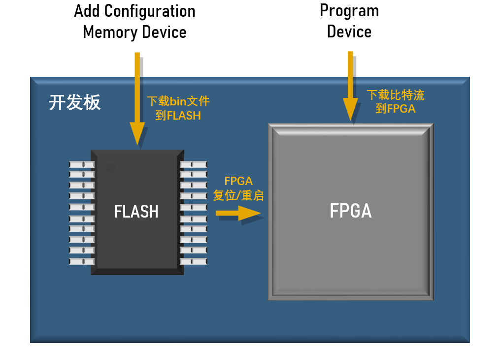
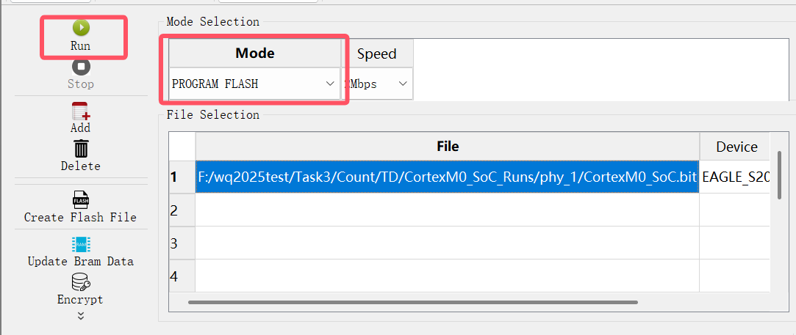
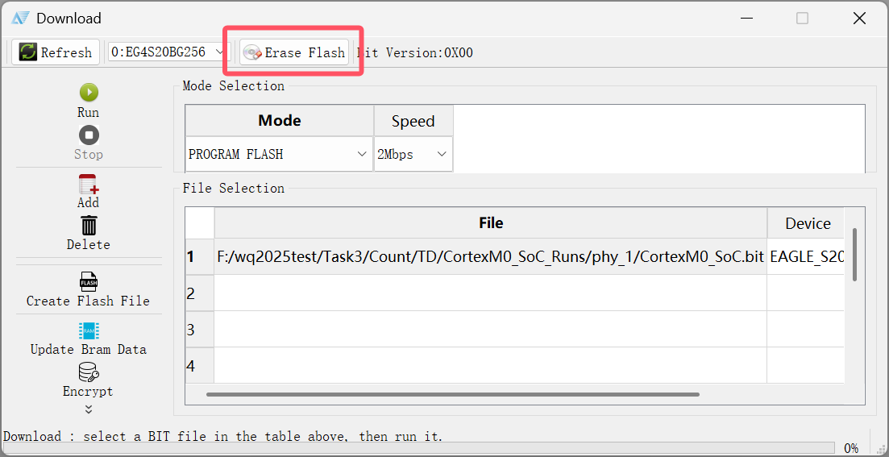

将硬件固化到开发板

聪明的你可能已经发现, 如果按下了 FPGA 开发板上的复位键, 或者断电重启, 刚刚使用比特流配置的硬件逻辑就丢失了. 如果你想将硬件逻辑固化到开发板上, 实现复位/断电不丢失, 可以使用 TD 的固化功能, 具体操作方法如下:
在 TD 的 FPGA Flow 栏中点击 Download 进入设置界面, 点击设置界面的 MODE, 将其进行下拉, 将 JTAG 换成 PROGRAM FLASH, 选择好 bin 文件后, 点击 OK 开始 FLASH 的配置, 这里需要等待的时间稍微有点长. 当进度条加载完毕后, 硬件逻辑就被成功配置到 FLASH 里了. 如果没有见效, 不要着急, 可以尝试按下 FPGA 开发板上的复位键并等待 LINK 指示灯熄灭. 这样就成功的固化在 FPGA 上面了.

当开发板开始正常工作后, 本次的固化工作就完满结束了.
硬件是怎样实现固化的?
如果你只想完成实验, 而对硬件固化的原理不感兴趣, 可以跳过此部分.
硬件的固化是依靠一个叫做 FLASH 的芯片实现的, FLASH 的中文名叫做 "闪存", 是一种掉电数据不丢失的存储器件. 而 bin 文件正是一种 FLASH 的标准配置文件格式.
Add Configuration Memory Device 操作会将包含有硬件电路信息的 bin 文件下载到 FLASH 中, 而 Program Device 操作只是将比特流文件下载到了 FPGA 中, 每次重启或者复位后, FPGA 都会首先从开发板上的 FLASH 中读取数据, 并进行硬件逻辑的配置. 从 FLASH 中读进来的数据会冲走原先配置的比特流信息, 这就是为什么 Program Device 的结果会在重启或者复位后丢失.
所以, 所谓的硬件固化并不是将数据固化在 FPGA 中, 而是固化在了它的 "好邻居" FLASH 中.
由于 FLASH 每次被写入前都需要进行漫长的擦除操作, 而写入操作本身也是一个比较缓慢的过程, 所以相比 Program Device, Add Configuration Memory Device 一般需要花费更多的时间.
移除固化文件
硬件固化过一次后想要重新固化之前, 点击 Download, 选择上方的 Erase FLASH, 即可移除掉之前的固化文件, 从而可以进行下一次的固化.
